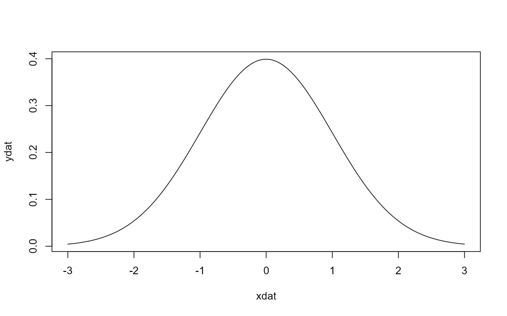
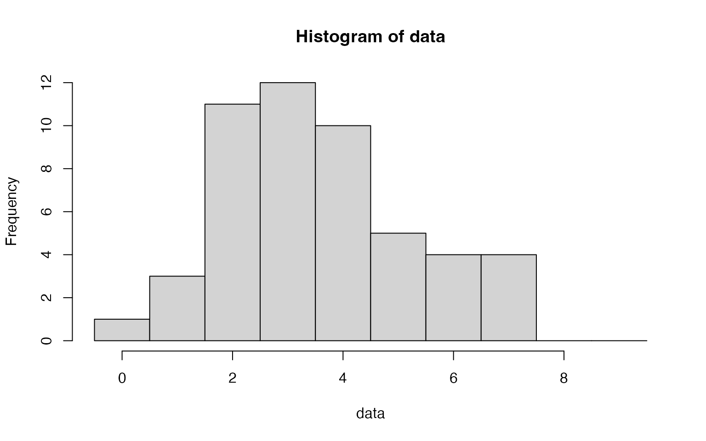
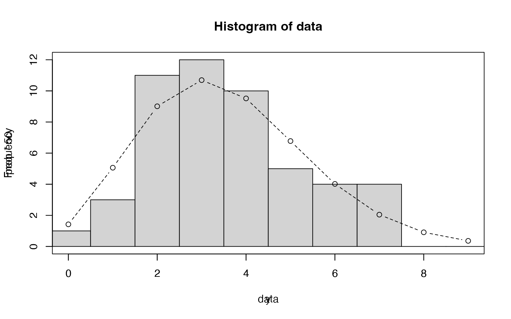
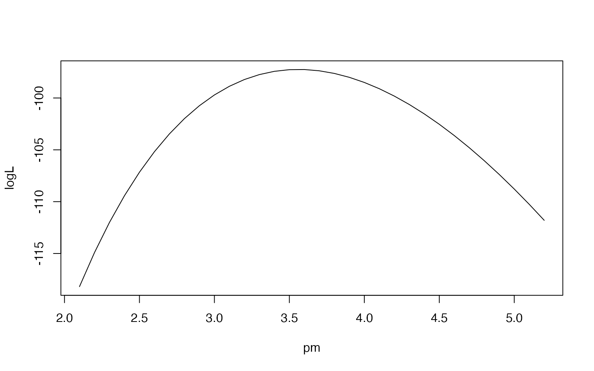

エピグラフ
- 赤池弘次先生：モデルの良さの指標で知られるAICで有名。
まえがき
- 「数理モデルで現象を表現・説明する」
- 一般化線形モデル（GLM: generalized linear model）
- 前半でGLM入門
- 後半でベイズ統計モデル
- ソフトウェアとサポートWebサイト
- R
- WinBUGS: マルコフ連鎖モンテカルロ（MCMC）法を行うためのソフトウェア
- MCMC法はR上で動くStanやBRMSというソフトでも計算できる
- 使う頃になったら、そのあたりは勉強会でも扱いましょう
- サポートWeb
1章
1.1 統計モデル：なぜ「統計」な「モデル」？
- 統計モデル（statistical model）とは
- データとして観測された現象を説明するため
- データにあるばらつきを説明するために確率分布を利用
- 観測データとモデルの当てはまり具合を評価可能
- P3の図
- 情報の（消失と言ってるけど、実際には）要約
- 自然界で観測できる現象の本質を知るために、なるべくうまく要約したい
- そのためには確率分布という部品は不可欠
1.2 「ブラックボックスな統計解析」の悪夢
- 悪夢たち＝QRPs(Questionable Research Practices)
- 検定手法の繰り返し：計画していた相関係数の検定では効果が見られなかったから群分けしてt検定してみよう、とか
- 謎指標の作成：統制条件との差では効果がなかったから比を取る、とか
- \(R^2\)の解釈：重回帰式の\(R^2\)が小さいから説明変数を増やしてみよう、とか
- データの変数変換：反応時間データは角変換するもの、と習ったような…
- ノンパラ：これは具体的な例が浮かばなかった
- 多重比較：これもそうするもんだって習ったような…
- P値：P値と有意水準の比較が全てとは分かっていてもP値が小さいと喜んでしまう…
1.3 この本の内容：一般化線形モデルの導入とそのベイズ的な拡張
- 一般化線形モデルと「これまでの」統計手法（＝線形モデル）の違い
- 線形モデル：「自然界で観測されるデータは正規分布する」
- 一般化線形モデル：現象によって分布の種類は異なる
- 2章ではまずはカウントデータから（＝カウントデータは正規分布しない）
1.3.1 各章の内容–全体の説明の流れ
- 2章
- 確率分布の説明：例としてポアソン分布（＝カウントデータに使う）
- パラメータを推定する：最尤推定
- 3章
- 一般化線形モデル
- ポアソン回帰：ポアソン分布・リンク関数・線形予測子を使ってデータを表現
- 一般化線形モデル
- 4, 5章
- モデルの比較：AIC
- 5章
- 最大対数尤度
- 尤度比検定
- 6章
- 色々な確率分布を使ったGLM
- 二項分布・ロジスティック回帰：2値データ
- 正規分布：あまり制約のない連続量データ
- ガンマ分布：正の数のみとる連続量データ
- 色々な確率分布を使ったGLM
- 7章
- 一般化線形混合モデル（GLMM: generalized linear mixed model）
- 統計モデルにランダム効果（＝個人差など）を
- 一般化線形混合モデル（GLMM: generalized linear mixed model）
- 8章
- MCMC
- ベイズ統計モデル
- 9章
- GLMのベイズモデル化
- ソフトウェアを使った推定（WinBUGS）
- 10章
- 階層ベイズモデル
- 11章
- 階層ベイズモデルの応用：空間構造を考慮した統計モデル
1.4 この本に登場する訳語・記号・記法について
- 定まった訳語がないもの
- 逸脱度：deviance
- 残差逸脱度：residual deviance
- 固定効果：fixed effects
- ランダム効果: random effects
- リンク関数：link function
- 最近用語が変わりつつあるもの
- 応答変数：response variable
- 従属変数：dependent variable
- 目的変数という言い方も
- 説明変数：explanatory variable
- 独立変数：independent variable
- 応答変数：response variable
- 式
- 応答変数\(y_i\), 説明変数\(\{x_i, f_i\}\)
- \(f(y_i)=\beta_1+\beta_2x_i+\beta_3f_i+...\)
- \(f(y_i)\): 応答変数のリンク関数
- 右辺：線形予測子
- \(\beta_1\)（説明変数を伴わない）：切片
- \(\beta_2\)（説明変数などを伴う）：傾き
- 応答変数\(y_i\), 説明変数\(\{x_i, f_i\}\)
- この本の書き方
- 積の記号（\(\times\)）、カッコ（log\((x)\)をlog\(x\)）を省略（本ではlogと書いてるけど、伊丸岡の資料では\(log\)と斜体にします。打ち込むのが面倒という理由）
- 指数関数：exp\(x=e^x\)、\(e\)は自然対数の底（である定数）
- 対数関数：log\(x\)はlog\(_ex\)
- \(i\in\{1,2, ..., 50\}\)：\(i\)は個体番号1から50まで
- 個体を\(y_i\)と表すとき、個体を特定せずに指すために\(y\)と表記する場合がある
- \(y*\)：\(y\)のどれでもいい
- 和記号（\(\sum\)）の下に\(i\)（\(\sum_i\)）：全ての個体の和
- 積記号（\(\prod\)）の下に\(i\)：全ての個体の積
- 丸めた場合も\(\approx\)ではなく等号\(=\)を使う
- \(\propto\)は比例
- \(確率変数\sim 確率分布\)：確率変数は確率分布に従う
- \(p(A,B)\)：同時確率（AとBがどちらも生起する確率）
- \(p(A|B)\)：条件付き確率（Bが起きたという条件のもとでAが起きる確率）
- 集合、ベクトル、行列を太字表記するというルールもあるが、この本では従わない。ただし 例外もあり。
おまけ
- 資料作りについて
- この本の特徴
- 数式を表現する機会が多い
- 図を表現する機会も多い
- Rのコードが出てくることも結構ある
- これらが簡単にできる方法で資料を作ると楽
- いくつかの選択肢
- 伊丸岡の場合
- RstudioでR Markdown形式で作っている
- TeX記法で数式を書ける
- チャンクという機能でRのコードを書き、それを実行して出力もできる(下に例)
- それをhtmlで書き出している
- ついでにGitHubで公開している
- RstudioでR Markdown形式で作っている
- 伊丸岡の場合
- この本の特徴
m<-0
v<-1
xdat<-seq(-3,3,0.01)
ydat<-(1/sqrt(2*pi*v))*exp(-(xdat-m)^2/(2*v))
plot(xdat, ydat, type='l')
2章: 確率分布と統計モデルの最尤推定
2.1 例題：種子数の統計モデリング
- 対象の植物\(i\), 種子数\(y_i\)
- 50個の種子数を数える
2.2 データと確率分布の対応関係をながめる
- カウントデータ(=非負の整数)
load('kubobook_2012-2/distribution/data.RData')
length(data)## [1] 50summary(data)## Min. 1st Qu. Median Mean 3rd Qu. Max.
## 0.00 2.00 3.00 3.56 4.75 7.00table(data)## data
## 0 1 2 3 4 5 6 7
## 1 3 11 12 10 5 4 4hist(data, breaks=seq(-0.5, 9.5, 1))
var(data)## [1] 2.986122sd(data)## [1] 1.72804sqrt(var(data))## [1] 1.72804- この種のデータはポアソン分布という確率分布が便利（カウントデータだから）
- 確率分布：確率変数の値とその出現確率の対応
- ポアソン分布
- パラメータはひとつ（分布の平均）
- 今回のデータでは平均3.56
- 平均3.56のポアソン分布とは?
y<-0:9
prob<-dpois(y, lambda=3.56)
plot(y, prob, type='b', lty=2)
hist(data, breaks=seq(-0.5, 9.5, 1), xlim=c(0,9), ylim=c(0,12))
par(new=T)
plot(y, prob*50, type='b', lty=2, xlim=c(0,9), ylim=c(0,12))
2.3 ポアソン分布とは何か？
- ポアソン分布
- \(p(y|\lambda) = \frac{\lambda^y exp(-\lambda)}{y!}\)
- \(y\in \{0, 1, 2, ..., \infty \}\)のとき、全ての\(y\)について和をとると1
- \(\Sigma^\infty_{y=0} p(y|\lambda)=1\)
- 確率分布の平均は\(\lambda\)、分散も\(\lambda\)
- ポアソン分布を選んだ理由
- 値\(y_i\)が非負の整数
- \(y_i\)に下限0はあるが、上限は分からない
- 平均と分散がだいたい同じ
2.4 ポアソン分布のパラメータの最尤推定
- 観測値に基づいてパラメータ\(\lambda\)を推定する
- 最尤法を使う
- データの表記法
- 50個のデータをまとめて表記：\(\{y_i\}\), あるいは \(Y=\{y_i\}\)$
- \(p(y_i|\lambda)\)：パラメータ\(\lambda\)のときにyが\(y_i\)である確率
- 尤度：ある\(\lambda\)のときに全ての個体\(i\)についての\(p(y_i|\lambda)\)の積
- データが50個のデータセットがあるとき、尤度は下の式
- \(L(\lambda)=p(y_1|\lambda)\times p(y_2|\lambda)\times p(y_3|\lambda) ... \times p(y_{50}|\lambda)\)
- \(=\Pi_ip(y_i|\lambda)=\Pi_i\frac{\lambda^{y_i}exp(-\lambda)}{y_i!}\)
- 例えば\(\lambda=2.0\)を変えていったときの計算は以下の感じ
i<-0
logL<-array()
pm<-array()
for (lmd in seq(2.0, 5.2, 0.1)){
logL[i]<-log(prod((lmd^data*exp(-lmd))/gamma(data+1)))
pm[i]<-lmd
i<-i+1
}
plot(pm, logL, type='l')
- 上のやつはかなり不細工。緑本ではfunctionを使ってる
- logL2 <- function(m) sum(dpois(data, m, log=TRUE))
- この意味はmを引数としてdpois(x,m)を計算するということ。mがラムダ。その計算自体をlogL2に代入しているので、sapply関数でパラメータlamdaをlogLに適用することで、計算可能になっている。
- さらに緑本は偏微分を行う
- 複数の変数を持つ式で、ある変数について偏微分するというのは、その変数について微分するということ。
- p25の\(L(\lambda)\)の式を\(\lambda\)について微分するとp26の\(logL(\lambda)\)の式になる。
- それを偏微分するとp27の式になり、計算すると平均と等しくなるよね、ということ。
- ただ、このように傾きが0になるところを探すということで最尤推定できることは普通ないので、コンピュータで最尤推定することになる
2.4.1 疑似乱数と最尤推定値のばらつき
- 今使ってる仮想データはポアソン分布に従う乱数を発生する関数rpois()を使っている。そのときのパラメータは3.5。
- rpois()が作るのは乱数なので（ポアソン分布には従っている）、発生する度に仮想データは変わる
- つまり、前のところで算出した最尤推定値も異なる
- この最尤推定値はどのくらいバラつくのか＝標準誤差
- 標準誤差：標本からの推定値（標本の代表値）のばらつき
- 緑本ではパラメータ3.5で50データを生成というのを3000回繰り返して、ばらつき具体をみている
- これは真のモデル（パラメータ3.5のポアソン分布）に基づく確認
- 通常は観測データから推測された\(\hat{\lambda}\)を使って見積もるしかない